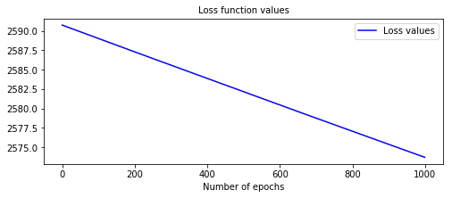

Tips on building models
Reaching complete optimization
It is advised to check the loss function values of the model once fitted to ensure that the best model parameters were computed. This can be done with the function pysurvival.utils.display.display_loss_values.
If the loss function reached a minimum, it will display a plateau after a certain number of epochs. If it is not the case the model will provide sub-optimal results. To solve this, it is advised to :
- either increase the learning rate
lr - or increase the number of epochs
num_epochs.
Let's illustrate this with an example:
-
Here we will build a model with a low learning rate; as a result the model will yield poor performances
from pysurvival.models.semi_parametric import NonLinearCoxPHModel from pysurvival.utils.display import display_loss_values from pysurvival.utils.metrics import concordance_index from pysurvival.datasets import Dataset %pylab inline # Loading and splitting a simple example into train/test sets X_train, T_train, E_train, \ X_test, T_test, E_test = Dataset('simple_example').load_train_test() # Let's build a Nonlinear CoxPH model structure = [ {'activation': 'Atan', 'num_units': 150}, ] nonlinear_coxph = NonLinearCoxPHModel(structure=structure) nonlinear_coxph.fit(X_train, T_train, E_train, lr=1e-6, dropout=0.) # We can now display the loss function values in respect to the epochs display_loss_values(nonlinear_coxph)
Figure 1 - Loss values of a model with sub-optimal performances  The c-index is 0.57, it is very likely that the model will yield poor results.# Computing the c-index c_index = concordance_index(nonlinear_coxph, X_test, T_test, E_test) #0.57 print('C-index: {:.2f}'.format(c_index))
-
By speeding the optimization, we managed to get a much better model. To achieve this, we can simply use a higher learning rate.
# Let's rebuild the model with a bigger learning # This will accelerate the optimization nonlinear_coxph.fit(X_train, T_train, E_train, lr=1e-3, dropout=0.) # We can now display the loss function values in respect to the epochs display_loss_values(nonlinear_coxph)
Figure 2 - Loss values of a model with better performances  The c-index is 0.97, and we can see that the loss function has plateaued around epoch 400.
The c-index is 0.97, and we can see that the loss function has plateaued around epoch 400.# Computing the c-index c_index = concordance_index(nonlinear_coxph, X_test, T_test, E_test) #0.97 print('C-index: {:.2f}'.format(c_index))
Actual vs Predicted
Once a model is built, it is always a good idea to compare the time series of the actual and predicted number of units that experienced the event at each time t. To do so, we compute the actual density/survival function of the data, which can be obtained using the Kaplan-Meier estimator and compare it to the average of all predicted density/survival functions.
The function pysurvival.utils.metrics.compare_to_actual can provide the comparison as well as the performance metrics between the two time series, such as:
- RMSE
- Median Absolute Error
- Mean Absolute Error
The function pysurvival.utils.display.compare_to_actual will also provide the charts.
API
compare_to_actual - Comparing the actual and predicted number of units at risk and units experiencing an event at each time t.
compare_to_actual(model, X, T, E, times = None, is_at_risk = False,
figure_size=(16, 6), metrics = ['rmse', 'mean', 'median'])
Parameters:
-
model: Pysurvival object -- Pysurvival model -
X: array-like -- input samples; where the rows correspond to an individual sample and the columns represent the features (shape=[n_samples, n_features]). -
T: array-like -- target values describing the time when the event of interest or censoring occurred. -
E: array-like -- values that indicate if the event of interest occurred i.e.: E[i]=1 corresponds to an event, and E[i] = 0 means censoring, for all i. -
times: array-like -- (default=None) A vector of time-points. -
is_at_risk: bool -- (default=True) Whether the function returns Expected number of units at risk or the Expected number of units experiencing the events. -
figure_size: tuple of double -- (default= (16, 6)) width, height in inches representing the size of the chart -
metrics: str or list of str (default='all') Indicates the performance metrics to compute:- if None, then no metric is computed
- if str, then the metric is computed
- if list of str, then all the given metrics are computed
The available metrics are:
- RMSE: root mean squared error
- Mean Abs Error: mean absolute error
- Median Abs Error: median absolute error
Returns:
- results: dict -- dictionary containing the performance metrics
Example
All the tutorials display an instance of how to use the function. Let's take the example of the Credit Risk tutorial:
- the time series of the actual and predicted number of loans that were fully repaid, for each time t.
from pysurvival.utils.display import compare_to_actual results = compare_to_actual(neural_mtlr, X_test, T_test, E_test, is_at_risk = False, figure_size=(16, 6), metrics = ['rmse', 'mean', 'median'])

- the time series of the actual and predicted number of loans that were still active, for each time t.
results = compare_to_actual(neural_mtlr, X_test, T_test, E_test, is_at_risk = True, figure_size=(16, 6), metrics = ['rmse', 'mean', 'median'])